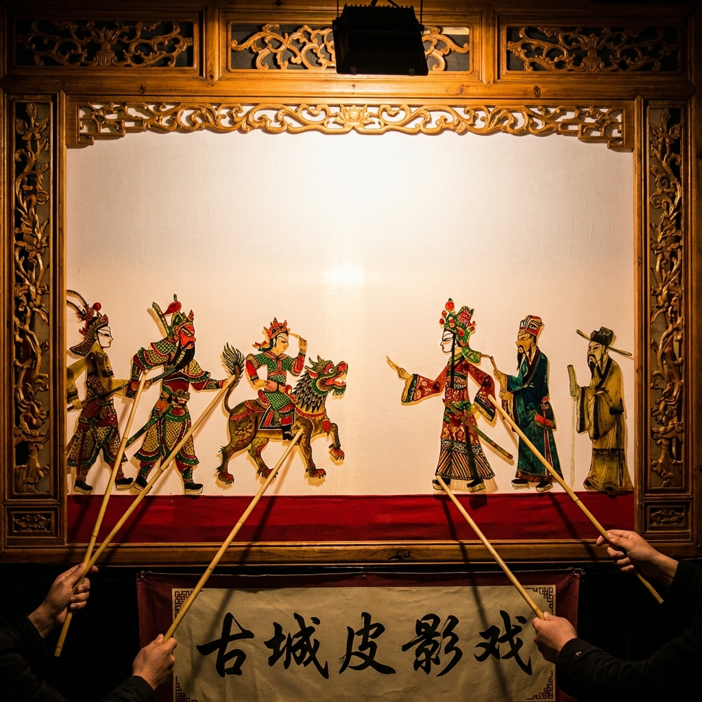
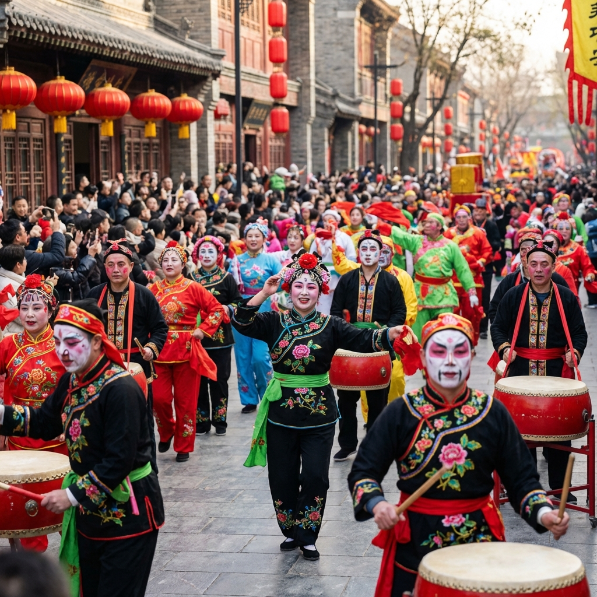

民俗瑰宝
指尖上的艺术，黄土地的歌谣
传统艺术
秦腔：吼出三秦魂
秦腔，是中国最古老的戏曲剧种之一。其唱腔慷慨激昂，宽厚豪放，充满了大西北人的耿直与豪迈。在西安的每个清晨，小公园里总能听到那一声声穿透云霄的嘶吼。
皮影戏：光影里的乾坤
西安皮影作为关中文化的瑰宝，以牛皮雕刻，色彩明亮。这种原始的“电影”在半透明的白布后演绎着历史兴衰，是中国传统文化的“活化石”。
戏曲人生·光影传奇·匠心传承

关中皮影
精雕细琢的牛皮，在光影交错中讲述着千年的英雄史诗。

社火表演
每逢佳节，关中大地便会响起震天的锣鼓。社火巡演热闹非凡，承载着人民对美好生活的祈愿。